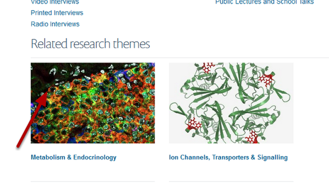
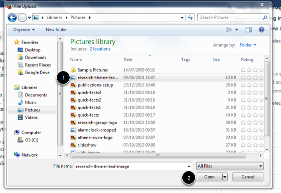
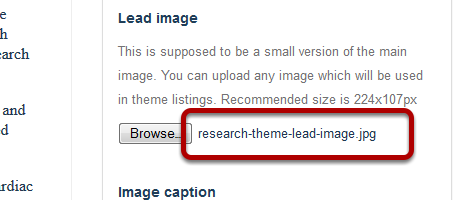

Note
these user guides are being phased out and replaced with the guides on Haiku Knowledge Base
If you add a Lead Image to a Research Theme this will display on research theme listings as shown below. If you don’t add a Lead Image these listings use the image from the Research Theme page.
Go to your Research Theme page and click on Edit.
Scroll down the page until you see the Lead image heading on the right side of the page. Click on Browse...
The image name will now display next to the Browse ... button:
Scroll to the bottom of the page. Click on Save.